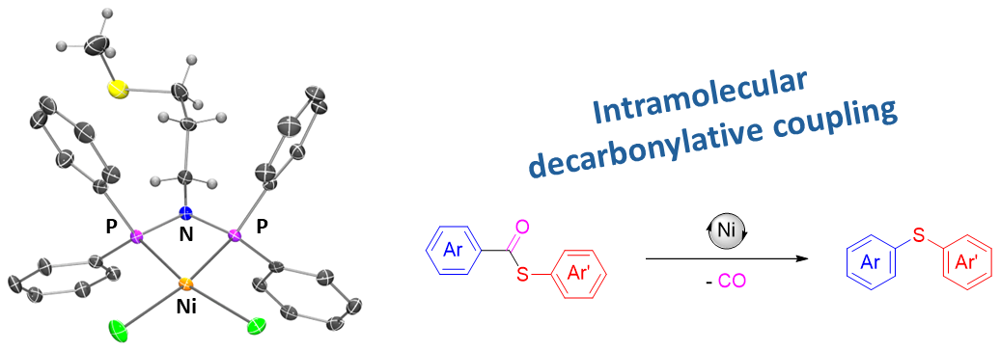
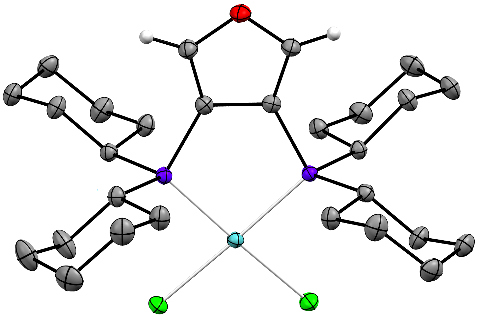
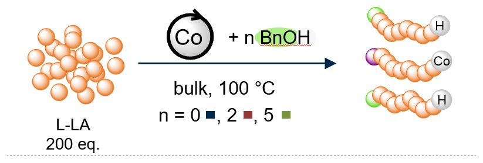
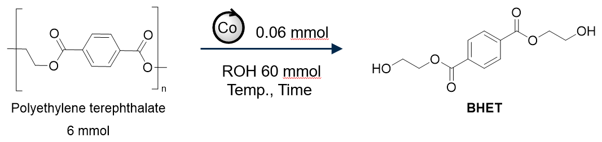
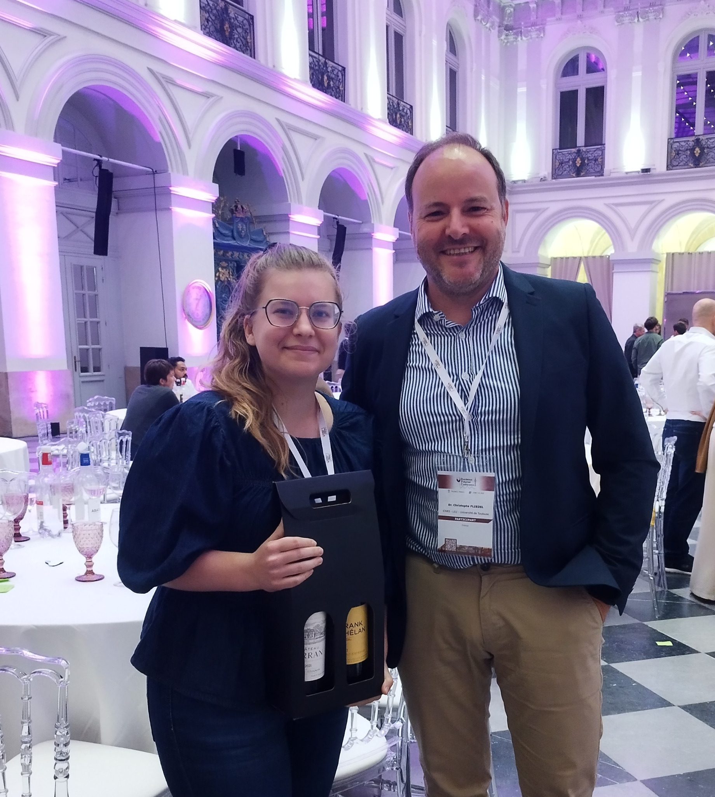
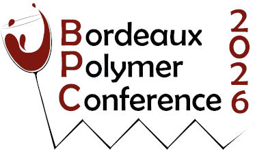
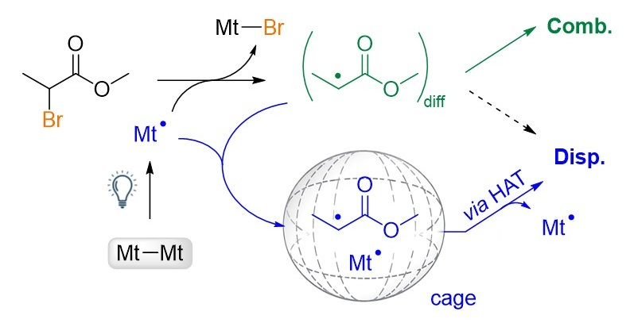
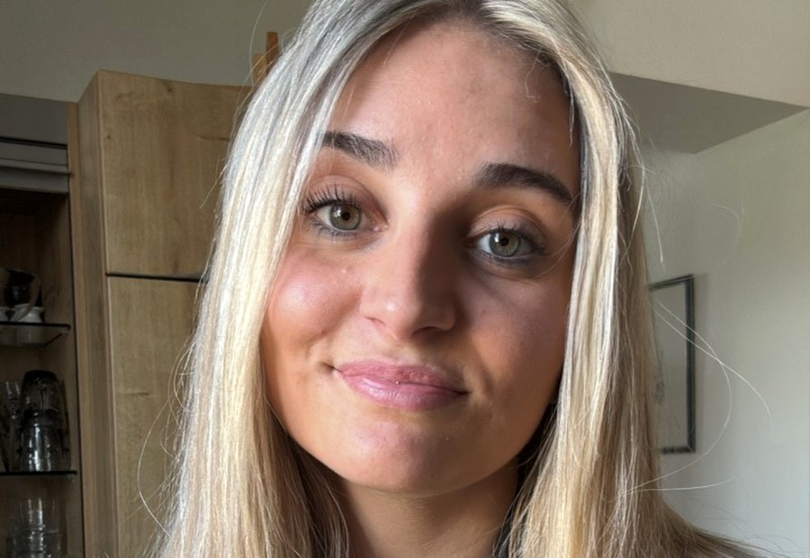
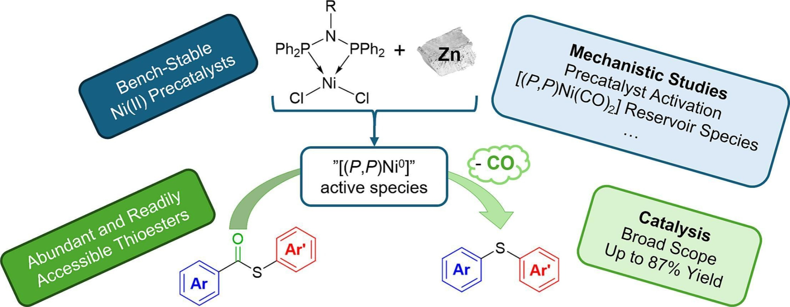

MOLECULAR CATALYSIS
Designing coordination and organometallic complexes for selective bond activation and catalytic transformations.
Ni · Pd · Co · Cu · FeLigand design · Cross-coupling · Bond activation
FROM MOLECULES TO A MORE SUSTAINABLE FUTURE
Coordination chemistry and earth-abundant metals for catalysis, controlled polymerization and sustainable polymer transformations.
DISCOVER OUR RESEARCH →
Earth-abundant
metals for
tomorrow’s chemistry
THREE COMPLEMENTARY DIRECTIONS FOR TOMORROW'S CHEMISTRY

Designing coordination and organometallic complexes for selective bond activation and catalytic transformations.
Ni · Pd · Co · Cu · Fe
Exploring metal-mediated approaches to control radical and ring-opening polymerizations and access well-defined polymer architectures.
OMRP · ATRP · ROP
Developing molecular approaches toward more sustainable polymer synthesis, recycling and upcycling.
Bulk & immortal ROPWHAT'S HAPPENING IN THE GROUP

Laurianne Forget and Christophe Fliedel represented the group at the Bordeaux Polymer Conference 2026, sharing our latest work in polymer and radical chemistry.

BPC 2026 →
New work by Laurianne Forget and co-workers on radical termination pathways and the role of metal complexes, published in ChemistryEurope.
READ THE PAPER →
Congratulations to Kenzia Paradas on a great M1 research project presentation. Well done!

New work from Vincent Fagué and co-workers on nickel-catalyzed decarbonylative coupling chemistry, published in Journal of Catalysis.
READ THE PAPER →Alexandre joins the group on April 1, 2026 to work on nickel catalysis within the ANR-funded NiCatEther project. Welcome to the team!
ABOUT THE PROJECT →PEOPLE · IDEAS · CHEMISTRY
We bring together coordination chemistry, catalysis and polymer science to understand molecular reactivity and develop more sustainable transformations.
MEET THE GROUP →JOIN US
We are interested in hearing from motivated students and researchers working at the interface of coordination chemistry, catalysis and polymer chemistry.